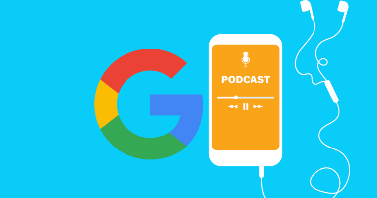
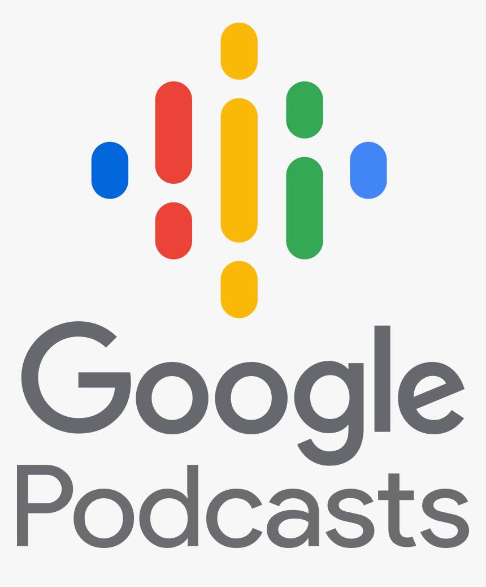

Features:-
With Google Podcasts, you can find and listen to the world's podcasts for free.
Discover podcasts you'll love
Subscribe and listen to all your favoritepodcasts.
Explore show and episode recommendations just for you.
Browse popular and trending shows in comedy, news, sports, and more.
Customize your listening experience
Listen at faster playback speeds or skip over silences.
Queue up episodes for a seamless listening experience.
Easily keep track of your listening history, downloads, and subscriptions.
Listen wherever you are
Listen on multiple devices - phone, laptop, smart speaker - without losing your place.
Auto-download shows to listen offline and on the go.
Discover podcasts using Google Search and Google Assistant.
To learn more, visit our Help Center: https://support.google.com/websearch/topic/9739148?hl=en&ref_topic=3036132&p=podcasts&visit_id=637190448011338458-2709322194&rd=1
Reviews:-
Houman Khalili
21 February 2021
The new interface is terrible. Not sure why it was changed. My favorite podcasts are bunched up at the top. Difficult to read episode details. Going to revert to an old version if possible, or switch to another app. Instead of replying to every review with a broken link (I can't seem to open the URL) explaining the decision to make the interface a mess, why don't you just fix it.
Joseph Fuller
20 February 2021
This app is absolutely amazing! A load of podcasts to sit back and listen to! Very clean and slick design, i can think of nothing i would change with it. 5 star app and I hope to see it alive for years!! New favorite app. Also if you have not listened to the podcast, Crime Junkie, i strongly recommend it. I just recently began my Crime Junkie journey and am hooked after 3 episodes!!

ADDITIONAL INFORMATION:-
Updated
March 25, 2020
Size
Varies with device
Installs
50,000,000+
Current Version
Varies with device
Content Rating
Rated for 12+
Offered By
Google LLC
apps-help@google.com